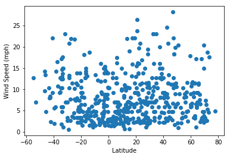
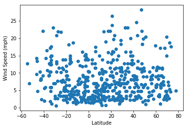

What's the Weather Like?

This project analyzes how the weather changes at different distances from the equator. A random set of 500 cities were selected, and analyzed using the OpenWeatherMap API
Python coding was used, specifically the Matplotlib library for graphing.
Visualizations

 
